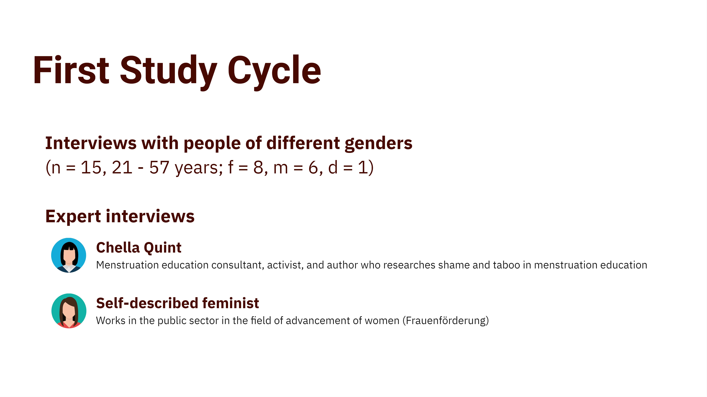
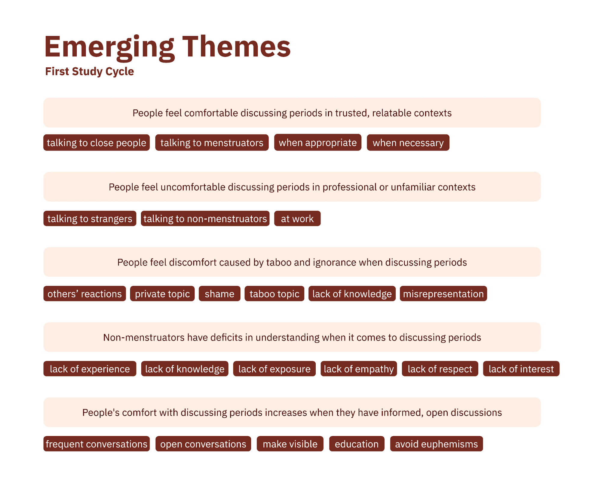
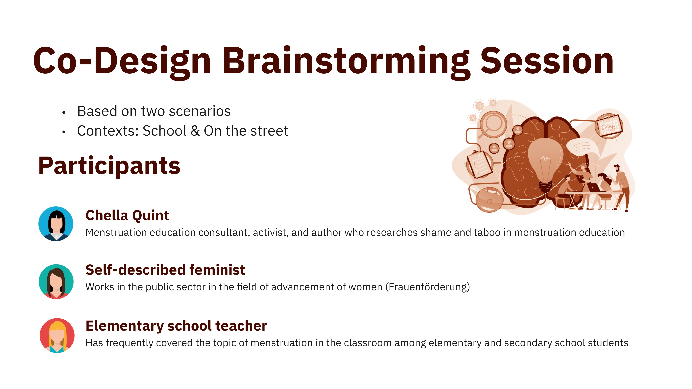
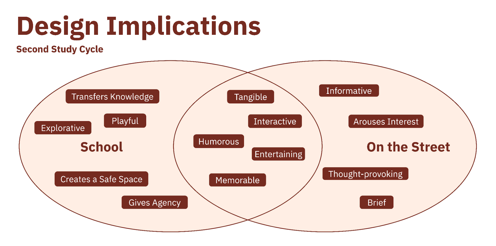

In the spring of 2023, I took the course HCI Research Project in my master's program.
Together with Eva-Maria Strumegger and Luzie Schroeter, we examined HCI-related scientific literature,
formulated a meaningful research question, conducted research through a workshop, developed a prototype based on
our findings, and then tested and analyzed this prototype. Our work culminated in a scientific research paper we
presented at an HCI conference. This paper can be viewed here.
PROBLEM
Menstruation is stigmatized
Menstruation is considered a taboo topic in our society [Molina 2021], and this is problematic because the shame surrounding this taboo harms menstruators psychologically by perpetuating the idea that they are inferior and dirty [Zhou 2022]. Menstrual activism is an area dedicated to breaking taboos related to menstruation [Koskenniemi 2021], yet it has been neglected in human-computer-interaction (HCI) [Søndergaard 2016].
SOLUTION
Design a prototype that supports menstrual activists
RESEARCH
Engaging people of all genders is essential
In order to better understand menstrual activism, we looked at related work and projects within this area to better understand what characterizes it and what may contribute to the taboo around menstruation. Molina [2021] pointed out that the lack of open conversations around menstruation and the continuous genderization of menstruation promoted societal menstrual shame. This was backed up by Quint [2021], founder of the menstrual activist organization Period Positive, who similarly argued that it is critical to engage all genders in the topic of menstruation in order to combat menstruation stigma. These insights inspired us to formulate our initial research question:
“How can we empower people of all genders to engage in an open conversation about the topic of periods in order to make the topic more socially acceptable?”
In order to address our initial research question during our first study cycle, we conducted semi-structured interviews with menstrual activists and people of all genders who were not menstrual activists. The aim of our interviews with menstrual activists was to find out in which ways activists are already working on reducing the taboo around menstruation and to identify approaches that could help to involve all genders in open conversations around menstruation. The aim of our interviews with people of all genders who were not menstrual activists was to find out in which contexts menstruators and those around them would like to see a more open discussion on the topic of menstruation and what it would take for them to engage in activism in this regard themselves. Through the interviews, we delved into comfort levels, attitudes, and activism, aiming to identify strategies to empower individuals and promote period positivity.

After conducting and transcribing our interviews, we performed a thematic analysis on this data. The following themes emerged from our analysis:

SECOND STUDY CYCLE: CO-DESIGN BRAINSTORMING SESSION
Draw prototype ideas from experts
The findings of our thematic analysis from our first study cycle revealed that a major hurdle to discussing menstruation openly was the lack of exposure and education surrounding this topic, especially among non-menstruators. Thus, in our second study cycle, we focused on identifying characteristics that a prototype should have in order to effectively support budding menstrual activists in engaging everyone, but especially non-menstruators, in informed conversations about menstruation. Our guiding research question was the following:
What characteristics should a prototype have to effectively support budding menstruation activists in engaging non-menstruators in informed conversations about the topic of menstruation?
In order to address our research question, we conducted co-design brainstorming sessions with relevant experts in a one-to-one format.

We chose this method because it encouraged the spontaneous expression of ideas and enabled us as researchers to support our experts in making their ideas more concrete. The experts shared their thoughts, experiences and ideas, while we sought to understand them in detail by asking in-depth questions and stimulating the development of concepts and sketches. After we analyzed our data by grouping and abstracting ideas presented during the co-design brainstorming session, the following design implications for our prototype emerged:

SKETCHES & LOW-FIDELITY PROTOTYPES
Explore prototype ideas
Based on the findings from our co-design brainstorming sessions, we iterated our design brief to be the following: "Through our artifact, we aim to address the lack of education and exposure surrounding the topic of the menstrual cycle. By interacting with our tangible artifact, everyone, but especially non-menstruators, should be encouraged to meaningfully engage in open discussions and learn something new (from each other) regarding the menstrual cycle." This design brief, along with the design implications from our second study cycle and design ideas we had been accumulating (my design process documentation for this can be viewed here), was used to guide the sketches and designs of our low-fidelity prototypes below.
In the end, we decided to build a high-fidelity prototype mainly based on "1, 2 oder 3 for Menstruation Education" because it seemed to best fit our design brief and design implications from our research. It also avoided issues found in other low-fidelity prototypes. For example, the menstruation monster was problematic because associating menstruation with something negative, such as monsters, could reinforce the taboo around menstruation, and the menstruation games dispenser likely would have felt discouragingly complicated for users.
FINAL PROTOTYPE
Build a memorable experience
For our final prototype, a screen displays an educational question about the menstrual cycle and three possible answers. Players must hop onto an answer field marked on the floor to indicate their answer. After a while, the correct answer as well as explanations for each answer option are displayed on the screen. By collaborating, discussing answers, and sharing insights, people on the street can meaningfully engage in open discussions and learn something new (from each other) regarding the menstrual cycle. This fosters an inclusive environment where everyone, including non-menstruators, feels comfortable. By embedding the artifact in a real space and having users interact with their whole bodies, the interaction is straightforward, tangible, and takes little time. This prototype also suits many of the design implications found in the second study cycle, as it is entertaining, humorous, memorable, exciting, informative, tangible, interactive, arouses interest, and can be brief.
The link to the full Figma work file can be found here. Additionally, my design process documentation can be viewed here, and a detailed report about this project can be read here.
CONCLUSION & LESSONS
Lessons learned
I am delighted to have contributed to this project, as I learned so much about researching, conceptualizing, designing, and building a prototype for a real-world problem. I greatly appreciate my fellow group members, Eva-Maria and Luzie, and the numerous participants who collaborated with us. Reflecting on my experience, I learned a few valuable lessons:
1. Silence can be golden. I love carrying out interviews to explore others' perspectives, but I did not realize how valuable silence could be until it was brought to my attention within a lecture for this project. I learned that what often feels like a long time for the interviewer may feel like a short time for the interviewee, and giving interviewees time and space for further quiet reflection led to valuable insights.
2. Strategically taking breaks can enhance productivity. During our initial brainstorming session, my group faced burnout after a long day of classes, leading to a stalemate. However, a refreshed session a few days later yielded significantly more productive results. This instance highlighted the negative impact of burnout on creativity, echoed by researchers like Huhtala and Parzefall [3]. Thanks to this experience, I've learned to prioritize breaks when feeling burned out during ideation, as this may lead to better results in the long run.
3. A culture of appreciation transforms workplaces. My long-held value of appreciation took on a new meaning within the context of team dynamics during this project. There were instances where my team's resilience was paramount, and gratitude helped us persevere. When I suddenly had to spend multiple hours handling an unforeseen demand in our project, one of my group members expressed appreciation toward me for this, which consequently made this task feel less daunting. I was surprised by how powerful a few heartfelt words could be, and I found a study mentioning that 54% of unappreciated employees felt the amount of stress they deal with at work is more than they can handle, compared to 13% of appreciated workers [4]. This figure impressed me and encouraged me to actively nurture a culture of appreciation within our group by making every effort to acknowledge and express gratitude for substantial efforts, which is a practice I hope to perpetuate in future endeavors.
REFERENCES
[1] Vivian Liu and Lydia B Chilton. 2022. Design Guidelines for Prompt Engineering Text-to-Image
Generative Models. In Proceedings of the 2022 CHI Conference on Human Factors in Computing Systems
(New Orleans, LA, USA) (CHI ’22). Association for Computing Machinery, New York, NY, USA, Article
384, 23 pages. https://doi.org/10.1145/3491102.3501825
[2] Yunlong Wang, Shuyuan Shen, and Brian Y. Lim. 2023. RePrompt: Automatic Prompt Editing to Refine
AI-Generative Art Towards Precise Expressions. In Proceedings of the 2023 CHI Conference on Human
Factors in Computing Systems, Albrecht Schmidt, Kaisa Väänänen, Tesh Goyal, Per Ola Kristensson,
Anicia Peters, Stefanie Mueller, Julie R. Williamson, and Max L. Wilson (Eds.). ACM, New York, NY, USA,
1–29. https://doi.org/10.1145/3544548.3581402
[3] Yutong Xie, Zhaoying Pan, Jinge Ma, Luo Jie, and Qiaozhu Mei. 2023. A Prompt Log Analysis of
Text-to-Image
Generation Systems. In Proceedings of the ACM Web Conference 2023, Ying Ding, Jie Tang, Juan
Sequeda, Lora
Aroyo, Carlos Castillo, and Geert-Jan Houben (Eds.). ACM, New York, NY, USA, 3892–3902.
https://doi.org/10.1145/3543507.3587430
[4] Michael Muller, Lydia B. Chilton, Anna Kantosalo, Charles Patrick Martin, and Greg Walsh. 2022.
GenAICHI: Generative AI and HCI. In CHI Conference on Human Factors in Computing Systems Extended
Abstracts, Simone
Barbosa, Cliff Lampe, Caroline Appert, and David A. Shamma (Eds.). ACM, New York, NY, USA, 1–7.
https://doi.org/10. 1145/3491101.3503719
[5] Han Qiao, Vivian Liu, and Lydia Chilton. 2022. Initial Images: Using Image Prompts to Improve Subject
Representation in Multimodal AI Generated Art. In Creativity and Cognition. ACM, New York, NY, USA,
15–28.
https://doi.org/10.1145/3527927.3532792
[6] Vivian Liu, Han Qiao, and Lydia Chilton. 2022. Opal: Multimodal Image Generation for News Illustration.
In Proceedings of the 35th Annual ACM Symposium on User Interface Software and Technology (Bend,
OR, USA)
(UIST ’22). Association for Computing Machinery, New York, NY, USA, Article 73, 17 pages.
https://doi.org/10.1145/3526113.3545621
[7] T. D. Cassidy. 2008. Mood boards: Current practice in learning and teaching strategies and students’
understanding of the process. International Journal of Fashion Design, Technology and Education 1,
1
(2008), 43–54. https://doi.org/10.1080/17543260802015154
[8] Huang-Ming Chang, Marta Boladeras, Andreu Català, Wei Chen, and Matthias Rauterberg. 2014. Mood Boards
as a Universal Tool for Investigating Emotional Experience. https://doi.org/10.1007/978-3-319-07638-6_22
[9] Steve Garner and Deana McDonagh-Philp. 2001. Problem Interpretation and Resolution via Visual Stimuli:
The Use of ‘Mood Boards’ in Design Education. Journal of Art & Design Education 20, 1 (2001),
57–64.
https://doi.org/10.1111/1468-5949.00250
[10] Annu Sible Prabhakar. 2021. Design Thinking For Technology Design. In Proceedings of the 22nd
Annual
Conference on Information Technology Education (SnowBird, UT, USA) (SIGITE ’21). Association
for
Computing Machinery, New York, NY, USA, 153–154. https: //doi.org/10.1145/3450329.3476873